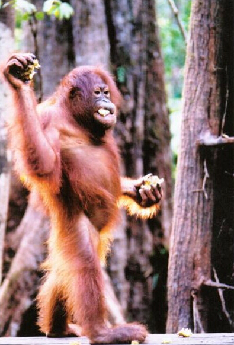
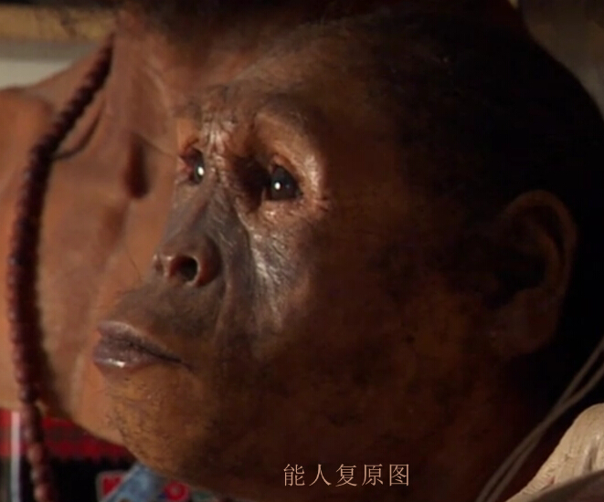

简述（起源）
在谈到人类的起源时，首先简单说下宇宙的形成，一般认为，宇宙起源于大爆炸，即 约138亿年前由一个密度极大，温度极高的 状态膨胀而来的。而我们伟大的地球则大约在46亿年前形成了，当然这只是估计。
远古时期
按照生物分类法，我们可以把有生命的个体即生物分成非细胞生物和细胞生物，非细胞生物包括病菌，而细胞生物分为古菌域，细菌域和真核域，真核 域则包括真菌界，原生生物界，植物界和动物界。而我们人类，当然就属于动物界啦。动物是多细胞真核生命体中的一大类群，称之为动 物界。大多数动物是能动的－它们能自发且独立地移动。绝大多数动物是捕食者－它们依靠其他生命体（如植物）作为其食粮。但也有少部分动物属于 分解者——从已经死亡的生物体作为食粮（例如蚯蚓）。 动物大约产生于7亿年前，演化自一个鞭毛真核生物，现在发现的动物化石多是在5亿4千万年前的寒武纪大爆发时的海洋物种。动物可分成真后生 动物亚界和侧生动物亚界。在寒武纪以前两侧对称的生物已经出现并呈现多样化的证据却越来越多。在贵州考古挖掘出来的“贵州小春虫”化石是现今发现的最古 老两侧对称动物，距今6亿至5.8亿年。
在两侧对称动物下，有一个重要的门类，这就是脊索动物门，脊索动物门是动物界最高等的门。包括尾索动物亚门，头索动物亚门和脊椎动物亚门。脊椎动物亚门的动物的脊椎都包在骨头里面，是脊索动物门中最大和最先进的亚门，目前所知最早的脊椎动物是一种无颌的鱼形动物，是在中国云南省昆明发现的昆明鱼，距今约五亿三千万年。 在脊椎动物下，有一重要的纲--哺乳纲,根据目前人类掌握的化石证据，哺乳动物被认为最早出现在2亿多年前的中生代的三叠纪，并于新生代取代恐龙（2.3-0.65亿年前）占据生态位优势并开始繁盛，成为陆地上占支配地位的动物至今。 灵长动物属于哺乳纲中的灵长总目，包含了树鼩目、皮翼目、灵长目及史前的更猴目。灵长类的进化史可追溯到6500万年前，它们是在当时造成物种（特别是恐龙）灭绝的大灾难下幸存的胎盘哺乳动物之中，最古老的一群。已知最古老的类灵长类哺乳动物物种更猴距今约6000万年。
人猿近属
猿是人猿总科动物的通称，属于类人猿下目，包 括两个科。虽然人们常把猿猴并称，有时候将猴 也称为猿，而猿有时也会称做是猴，不过他们在生物学上是不同的动物。早期猿类起源于旧世界猴即猴科，大约两千五百万年前开始出现。
据分子学的研究表明，猩猩属是在1400万年前从它们祖先那里分化出来的，猩猩属也叫人猿、红猩猩、红毛猩猩 ，与猴子最大不同的地方就是没有尾巴，能用手或脚拿东西。与人类基因相似度达96.4％。平均寿命40年，平均身高171—180厘米。
人属
人属是灵长目人科中的一个属，最大的特点是有发达的脑，前 额直立，牙齿的大小逐渐相近，逐渐减小，手逐渐 灵活。今天生活在世界上的现代人是其唯一幸存的一个种。
独特的人类
智人（现代人），属于人亚科中的人属。与其他动物相比，人具有高 度发达的大脑，具有抽象思维、语言、自我意识以及解决问题的能力。直立行走是 人类的重要特性。此种能力，加之人类直立的身体导致人类的前肢可以自由活动，使得人 类对工具的使用远超出其它任何物种。与其他高等灵长类动物一样，人类是社会性的。人尤其擅长 用口头、手势与书面语言来表达自我、交换意见以及组织。人类创造了复杂的社会结构，从家庭到 国家。人类个体之间的社会交际创立了广泛的传统、习俗、宗教制度、价值观以及法律，这些共同构 成了人类社会的基础。人类并非在地球上独一无二的动物，还由于人类具有审美的观念，再加之人类自我 表达的欲望和相对大的大脑，人类创造了宗教、艺术、语言、以及科学。
猿人进化史
人类和黑猩猩拥有共同祖先古猿，大约在700万年前，我们与黑猩猩步入了不同的演化过程，古猿经 过能人，直立人，海德堡人，最终在20万年前形成了智人，也就是我们现代人。现存的猿和人（统 称人型总科）和旧世界猴都归在狭鼻下目（Catarrhini）有共同的祖先。狭鼻下目是分布于旧大陆的高等灵长类， 包括原上猿总科Propliopithecoidea、猴总科Cercopithecidae和人型总科Hominoidea。其中原上猿类,它们是原始的狭 鼻下目,因为同时拥有猴类和猿类的特征,原上猿总科是狭鼻下目最原始的代表，也是猴总科和人型总科的共同祖先.
阿法南方古猿的发现
科学家泽拉•阿拉姆塞吉德倾注毕生心血，终于在东非大裂谷有了惊人的发现，找到了距 今约330万年前的颧骨化石，泽拉将这个婴儿化石取名为塞拉姆，鉴定结果出来了，它是人 类祖先，属于阿法南方古猿，一种和猩猩相似的双足行走小型动物，和著名物种露西相同，同时具 有猿和人的特征，证明了我们进化历程中的关键一步，直立行走。
在200多万年前，那是新纪元的曙光，那是我们的时代，人 类的时代，作为神秘工具制造者，能，是第一批人类。第一个能人化石包 括21根手骨，和人类非常相似，能人的脑容量扩大了很多，这种进化会使其很大程度上增 加认知能力，正因为有更大的大脑，能人看上去非常近似人类。在200万年前，气候发生了巨大的 变化，矮小的两足猿脑容量变大，进化成能人，而无法适应的则遭到灭绝，例如塞拉姆和露西。
能人的发现
法国科学家米歇尔•布鲁内特年复一年，直到2001年第 26次远征发现了一个破碎变形的头骨，取名图买头骨，距今约600万年，能直立行走，很有可能就是人类 最原始的祖先。从图买到塞拉姆，这两种两足动物大脑体积仍然很小，而且他们不是特例，数百万年里存在过大量直立行走者。
直立人的发现
直立人大约生活在200万年前，他们和人类极为相近，是最早的取火者和 狩猎者，具备了人类的基本特征。想象一下，至5000年有记载可寻的人类历史，将我们带回到埃 及金字塔时代，乘以二，追溯到一万年前，回到人类开始培育植物农业诞生的时代，再乘以二，冰河时代的 猎人在山洞壁上绘出精美绝伦的壁画，再乘以一百，此时我们才来到了生活在东非大裂谷的直立人的时代。他们到 处迁徙，制造工具，还建立了第一个人类社会，开始关注别人的思想以及别人对自己的看法。著名人类学家利基夫妇发现 了150万年前的直立人化石，取名图尔卡纳男孩，他们的脑容量增大了，能制造手斧，擅长跑步，虽然他的头部较原始，但图尔 卡纳男孩的骨架已和人类相差无几，他确实是人类，做 为出色的工匠，直立猿人已经进化成智能物种.
最后的阐述
原始人在大约100万年前，因为非洲的气候反复无常，很多直立人开始离开非洲，四处迁徙，于是产生了海德堡人，出现在大 约30-40万年前，海德堡人在欧洲进化成了尼安德特人，在非洲，没有迁移的族群则进化成了智人（现代人），尼安德特人是在所 有的古人类中，和我们智人（现代人）最接近的，他们矮小粗壮的身躯让他们在反反复复的冰河期存活下来，他们以狩猎为生，主 要生活在欧洲和亚洲中部冰架的边缘地区，科学家在洞穴中发现了尼安德特人的小孩化石，距今有10万年的历史。
探索未止
14万年前，智人也即我们现代人徘徊在灭绝的边缘，但是人类从卑微的起点崛起，最终取代原本 已经存在的其他古人类种群即尼安德特人，第一次，地球上只剩下一种人类，但这一物种遍布了全球， 还去了月球，甚至要去火星，这非常奇特，因为人类利用环境的方式的确是独一无二的，起初，气候巨变造就 了我们，教给我们新的创造力，是这种创造力带来了大量科技进步，但究竟是什么让我们与众不同仍是个谜，很 快将发现我们物种独有的基因变化，但是基因只是特殊性的一部分原因，另一部分就是人类独有的神秘创造物，也就 是文化，智人是人类发展阶段中，适应力最强的一种，这意味着不论世界上发生什么，我们都有办法去适应。今天，这 种适应方法是文化，如果冰川来到亚利桑那，我们不会长出厚厚的皮毛，而是会建造更多的壁炉和取暖设备，文化是复杂思 维和理解方式的仓库，我们把它传递给我们的孩子，就像传递基因般准确无误，文化进化和基因进化交融互动的方式，将会成 为未来研究的前沿，因为有一点毫无疑问，进化不会停止，过去一万年间基因组层面的进化率增加了今后几千年内，可能还会继 续，它会将我们带到何处，我们不得而知，而我们还是个年轻的物种，我们的未来还有很长的路要走。